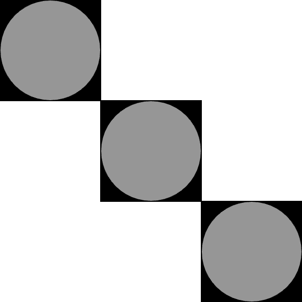

Your sketch:
Write code in exercise2-3/sketch.js to create output that matches the expected output shown below. Creating this pattern requires you to think about the order in which you draw the shapes.
When you are done, check your work using check-exercise2-3.html.
Expected output:

You only need to edit sketch.js.
The order that you call the shape functions is the key to this exercise. Another thing to keep in mind is that, by default, the x and y coordinates of squares and rectangles are the top left corner, while the x and y coordinates of circles and ellipses are the centre. This will impact how you calculate the coordinates for each shape.
The shade of grey used for the circles is 150.
Some useful links in the p5.js documentation: